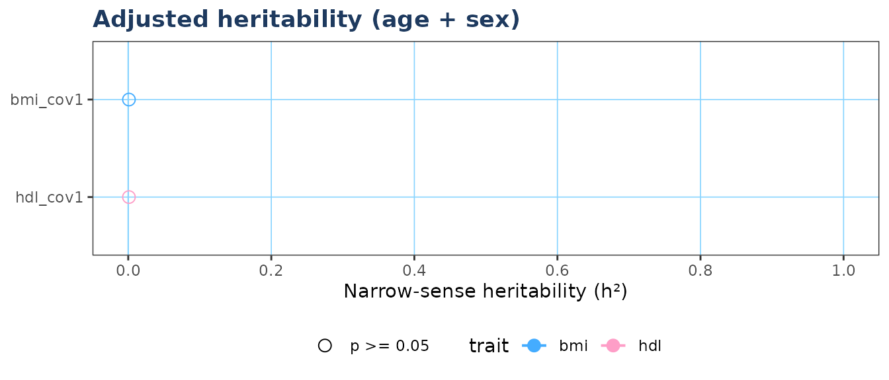

R-itable estimates narrow-sense heritability (h²) for quantitative traits in family cohort studies using a profile-likelihood variance-components approach, without requiring SOLAR Eclipse or any proprietary software.
The three main steps are:
herit_vc().herit_batch(), then visualise
with plot_forest().Your pedigree data frame needs four columns: individual ID, father
ID, mother ID, and sex (1 = male, 2 = female). Missing parents are coded
NA or 0.
# Minimal example pedigree (founders + one generation of offspring)
ped <- data.frame(
id = 1:8,
pat = c(0, 0, 0, 0, 1, 1, 3, 3),
mom = c(0, 0, 0, 0, 2, 2, 4, 4),
sex = c(1, 2, 1, 2, 1, 2, 1, 2)
)
# Study subjects are the offspring (IDs 5-8)
A <- build_grm(ped, study_ids = 5:8)
round(A, 3)
#> 5 6 7 8
#> 5 1.0 0.5 0.0 0.0
#> 6 0.5 1.0 0.0 0.0
#> 7 0.0 0.0 1.0 0.5
#> 8 0.0 0.0 0.5 1.0The diagonal is 1 for non-inbred individuals. Full siblings share 0.5 of their genetic material on average, so off-diagonal entries for sibling pairs are 0.5.
set.seed(42)
# Simulate some phenotype data for the study subjects
dat <- data.frame(
IID = 5:8,
age = c(35, 38, 40, 44),
sex_num = c(1, 2, 1, 2),
bmi = c(24.1, 27.3, 22.8, 29.5)
)
# Unadjusted model
res_unadj <- herit_vc("bmi", grm = A, data = dat, min_n = 3)
#> ✔ bmi_unadj n=4 h2=0.001 [0,1] p=0.5
# Adjusted model (age + sex)
res_adj <- herit_vc("bmi", grm = A, data = dat,
covs = c("age", "sex_num"),
label = "bmi_adj",
min_n = 3)
#> ✔ bmi_adj n=4 h2=0.001 [NA,NA] p=0.5
str(res_unadj)
#> List of 11
#> $ label : chr "bmi_unadj"
#> $ trait : chr "bmi"
#> $ covariates: chr ""
#> $ n : int 4
#> $ h2 : num 0.001
#> $ se : num 44.7
#> $ ci_lo : num 0
#> $ ci_hi : num 1
#> $ pval : num 0.5
#> $ sigma2_a : num 0.00071
#> $ sigma2_e : num 0.712The returned list contains:
| Field | Description |
|---|---|
h2 |
MLE narrow-sense heritability |
se |
SE from profile-LL curvature |
ci_lo, ci_hi
|
95% profile-likelihood CI |
pval |
One-sided LRT p-value (boundary-corrected) |
sigma2_a |
Additive genetic variance |
sigma2_e |
Residual variance |
For real analyses you will typically run many traits across several
covariate models. herit_batch() handles this and returns a
tidy data frame.
# Add a second trait
dat$hdl <- c(55.0, 60.2, 48.3, 72.1)
covs_list <- list(
unadj = NULL,
cov1 = c("age", "sex_num")
)
res <- herit_batch(
traits = c("bmi", "hdl"),
grm = A,
data = dat,
covs_list = covs_list,
min_n = 3,
.progress = FALSE
)
res
#> label trait covariates n h2 se ci_lo ci_hi pval sigma2_a
#> 1 bmi_unadj bmi 4 0.001 44.7214 0 1 0.5 0.00071
#> 2 hdl_unadj hdl 4 0.001 44.7214 0 1 0.5 0.00071
#> 3 bmi_cov1 bmi age+sex_num 4 0.001 NA NA NA 0.5 0.00017
#> 4 hdl_cov1 hdl age+sex_num 4 0.001 NA NA NA 0.5 0.00017
#> sigma2_e
#> 1 0.71206
#> 2 0.71206
#> 3 0.17143
#> 4 0.17143
if (requireNamespace("ggplot2", quietly = TRUE)) {
plot_forest(res,
model_filter = "cov1",
colour_by = "trait",
title = "Adjusted heritability (age + sex)")
}
A typical family cohort workflow looks like this:
library(itable)
# 1. Load pedigree (full pedigree including founders)
ped <- read.csv("baependi_pedigree_full.csv")
# 2. Load analysis dataset
dat <- read.csv("baependi_analysis_dataset.csv")
dat$age2 <- dat$age^2
dat$age_sex <- dat$age * dat$sex_num
# 3. Build GRM once -- reuse for all traits
A <- build_grm(ped,
study_ids = dat$IID,
id_col = "IID",
pat_col = "pat",
mom_col = "mat",
sex_col = "sex_num")
# 4. Define covariate models
covs_list <- list(
unadj = NULL,
cov1 = c("age", "sex_num"),
cov2 = c("age", "sex_num", "age2"),
cov3 = c("age", "sex_num", "age2", "age_sex")
)
# 5. Run batch estimation
brain_traits <- c("k", "S", "I", "AvgThickness", "localGI_corrected")
res <- herit_batch(
traits = brain_traits,
grm = A,
data = dat,
covs_list = covs_list
)
# 6. Save and plot
write.csv(res, "table_heritability_brain.csv", row.names = FALSE)
plot_forest(res, model_filter = "cov2",
title = "Brain morphology heritability (age + sex + age2)")